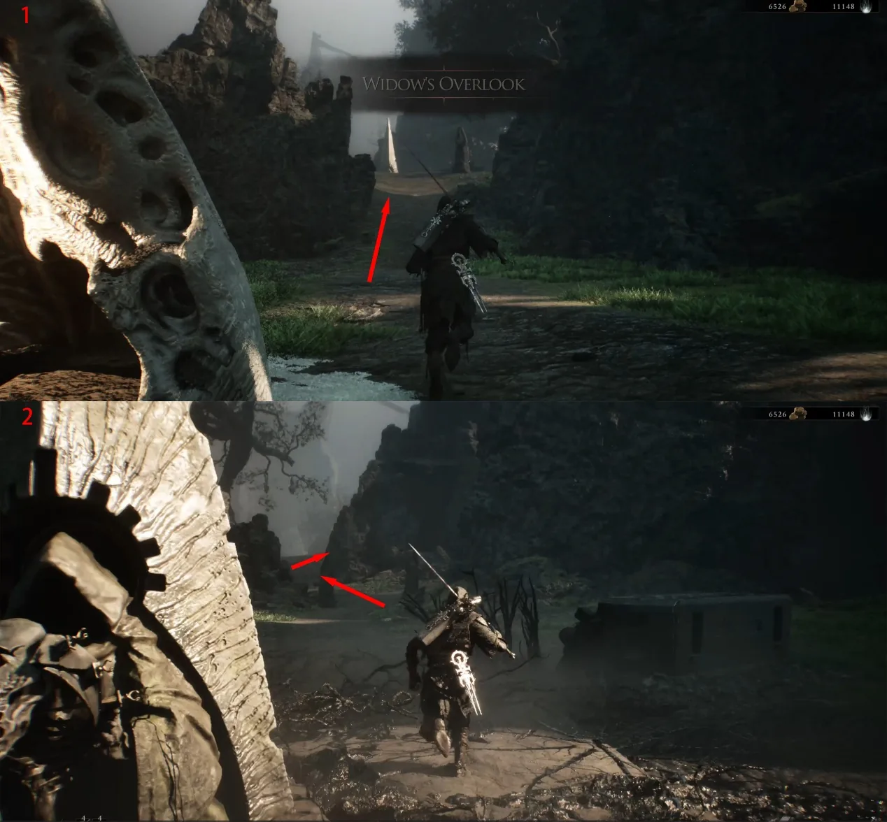
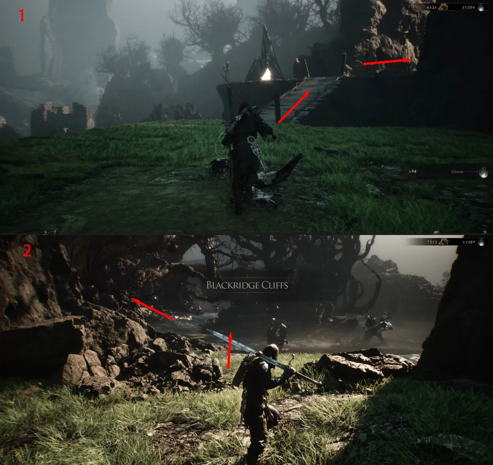
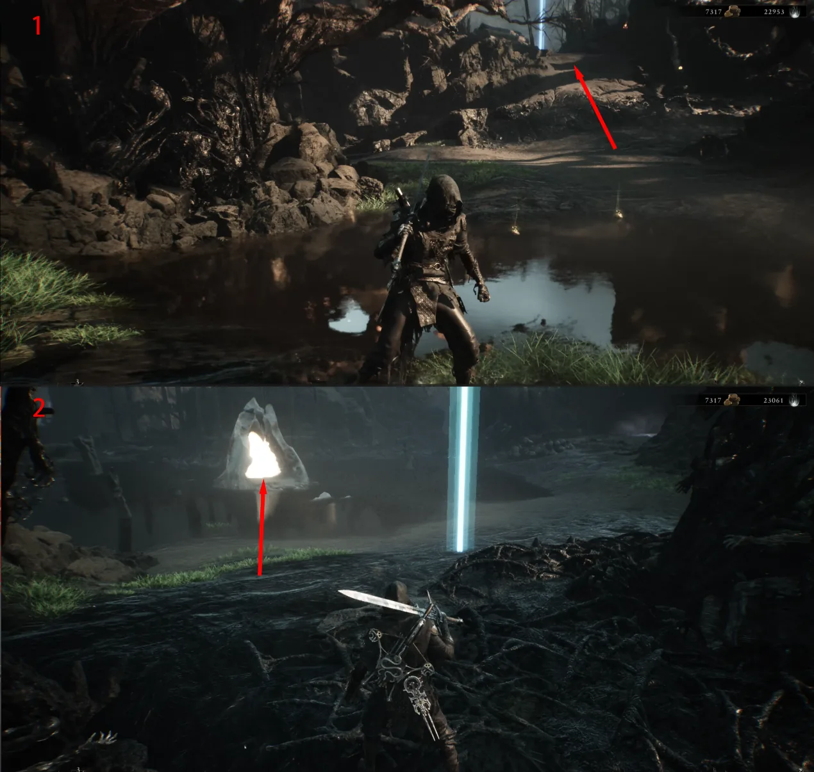
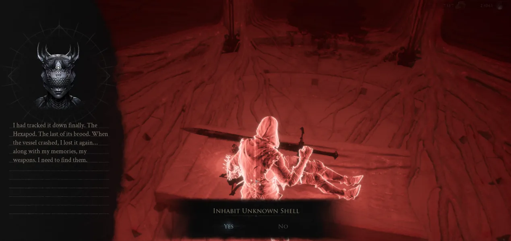

Shell acquisition · Fainweald
How to get
Proxima
A short annotated route from Widow's Overlook to Blackridge Cliffs, where the unknown Shell memory unlocks Proxima.
- Start
- Widow's Overlook
- Location
- Blackridge Cliffs
- Unlock
- Proxima

Route 01Start at Widow's Overlook and follow the red-arrow route out of the area.

Route 02When you reach Blackridge Cliffs, take the upper-left route marked in the image. Do not turn down toward the lower paths.

Route 03The Beacon shown on the board marks the Proxima route. Continue through the opening and stay with the red arrows.

Route 04Follow the path to its end and interact with the unknown Shell. Complete the Inhabit Unknown Shell memory prompt to unlock Proxima.